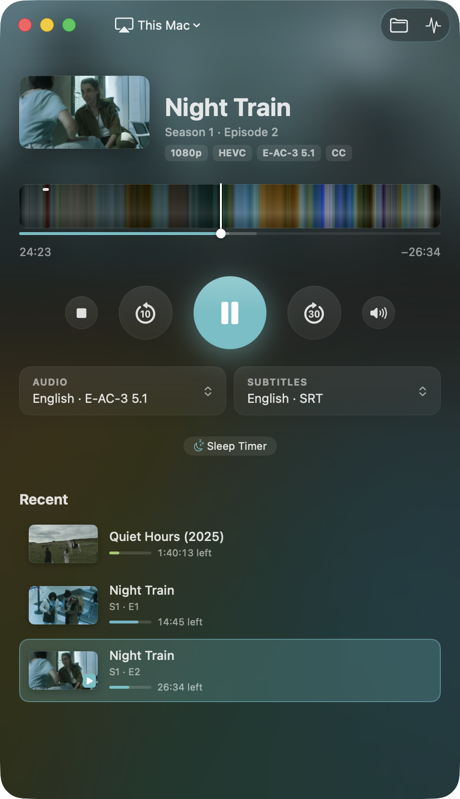
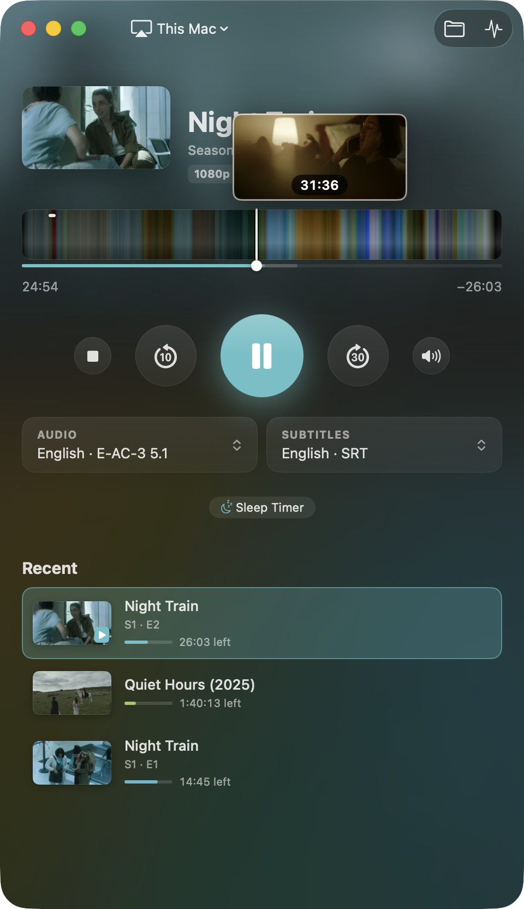
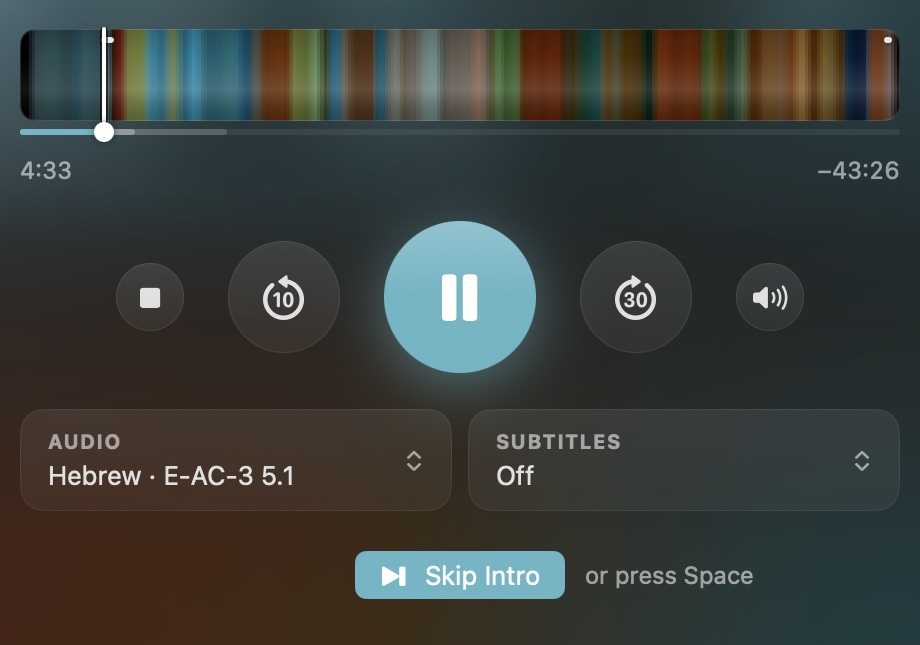
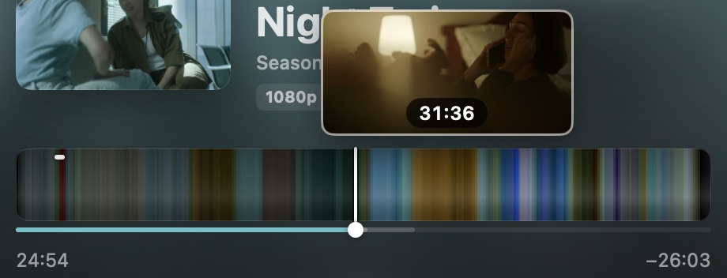
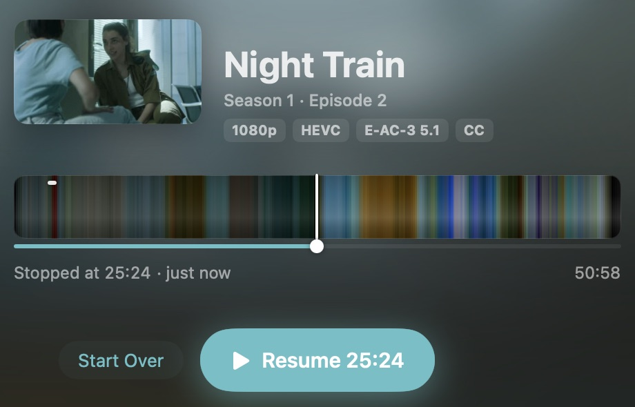
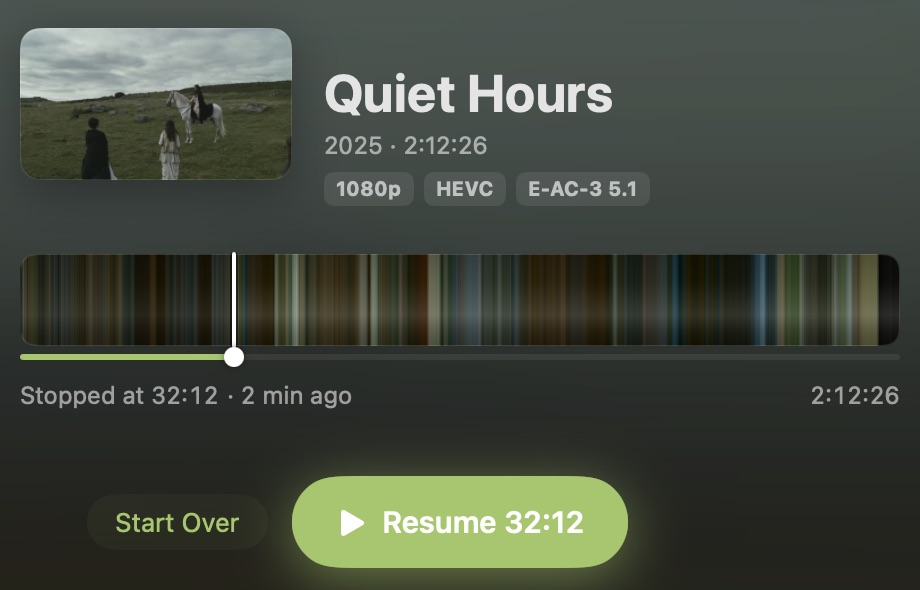
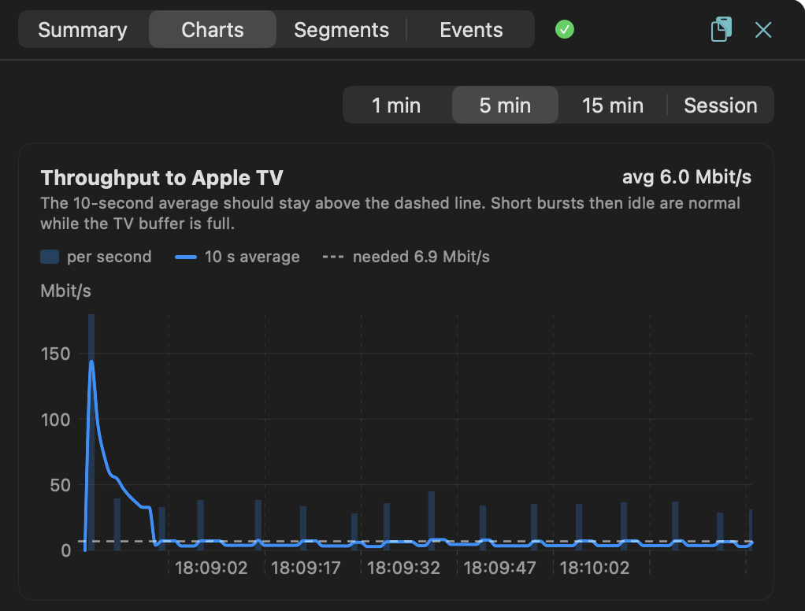

Your own films and series on the Apple TV, straight from the Mac.
Luftbro is a small Mac app that plays your own video files on an Apple TV over AirPlay. No media server, no library, no account. Drop a file on the window, press Play, and it's on the TV in about a second. The Mac is the remote.


What it does
On the TV in about a second
Drop a film or an episode on the window and press Play. About a second later it's playing on the Apple TV. The picture and sound are copied as they are, so 4K HDR, Dolby Vision and Atmos reach the TV untouched. MKV, MP4 and MOV start that fast, including the files the Apple TV won't open on its own. AVI, MPG, MTS, WMV and most other formats play after a short wait while the start is prepared, and a file that is still downloading plays too. Only what the Apple TV can't play is converted, while you watch.
- 4K HDR
- Dolby Vision
- Atmos
- H.264
- HEVC
- AAC
- AC-3
- E-AC-3
Skip Intro, even without chapters
Skip Intro and Next Episode buttons, like on the streaming services. When the file has chapters for the intro and the credits, Luftbro uses them. When it doesn't, it finds the intro by matching its sound against the neighbouring episodes, where the same theme plays, and the credits by spotting white text on black near the end. Space presses the button for its first few seconds. The episode in the pictures has no chapters, so its intro and credits were found this way.


Subtitles synced to the speech
A subtitle file made for another release of the film often runs a few seconds early or late all the way through, or drifts further off as the film goes on because that release ran at another frame rate. Subtitles → Delay → Sync Automatically listens to a few minutes of the audio with the sound classifier built into macOS and moves the subtitles to where people are talking (“Subtitles moved 2.4 s later”). Subtitles that drift get stretched to fit from start to finish (“Subtitles stretched 4.3 % to fit, made for 25 fps”). If it isn't sure, it leaves them as they were and says so. H and J nudge them by half a second if you'd rather do it by hand.
A timeline in the film's colours
The timeline is the whole film drawn in its own colours, with a frame from that point when you hover it. Mostly it looks nice, but you can also see the night scenes before you jump to one. Thin marks along the top edge show where the intro and the credits are.

Every film looks a little different
The window takes its colours from what's playing. The background is a blurred frame from the film, and the progress bar and the Resume button take its most vivid colour. The picture next to the title is the file's cover art; without one, Luftbro reads the opening titles with the OCR built into macOS and shows the title card, and failing that the best-looking frame.


When it stalls, it says why
Diagnostics names the likely cause (the network, the encoder, the Apple TV, the file or Luftbro's own server) with the evidence: throughput, the TV's buffer and the round trip over time, and every piece of the stream the TV asked for. It records all the time, so you can open it after the fact. If the Wi-Fi drops, Luftbro reconnects and carries on from where the TV was.


The Mac is the remote
Keyboard, media keys, Control Center, AirPods, the TV's volume, a sleep timer and the Touch Bar if you still have one. With no TV around, “This Mac” plays in a window on the Mac instead, with its own picture and sound controls.
No account, no analytics
No subscription either. The stream goes from your Mac to your Apple TV over your own network, and nothing about you or what you watch goes anywhere else. The one other request is a daily look at GitHub for a newer version, which you can turn off.
Also
- Text subtitles (SRT, ASS, WebVTT) inside the file or next to it,
Subs/folders included. Blu-ray PGS subtitles are read as text with the OCR built into macOS. - A series remembers your audio, subtitles and subtitle timing from one episode to the next. When an episode ends, the next one is loaded ready to play, but it never starts by itself.
- Resume or Start Over, and a list of recent files with how far you got.
- Playback can move to another Apple TV in the middle of a film, and the Mac stays awake while it streams.
Why
I have a folder of films and series and an Apple TV that won't open half of them. The usual answer is a media server, which is a lot of machinery between a file and a Play button. So I wrote the part in between and nothing else. It is a bridge from a file on the Mac to the TV, plus the things I kept wanting while watching.
How it works
The Apple TV plays HLS over AirPlay. It does not play MKV. So:
- ffprobe the file
- ffmpeg remuxes it to HLS (fragmented MP4 segments), on demand
- a small HTTP server on the Mac serves the segments
- pyatv tells the Apple TV to play the URL
Segments are made as the TV asks for them, cut from the file's keyframe index, so nothing waits for a full conversion. A Python backend does the work; a SwiftUI app talks to it over localhost and is the remote. Both are in the download, with their own Python and ffmpeg.
| In the file | On the TV |
|---|---|
| H.264, HEVC | copied; HEVC tagged hvc1, Dolby Vision kept |
| AV1, VP9, MPEG-2, … | re-encoded with VideoToolbox |
| AAC, AC-3, E-AC-3 (incl. Atmos) | copied |
| DTS, TrueHD, FLAC, Opus, … | E-AC-3 640k for surround, AAC for stereo |
| SRT, ASS, WebVTT | soft subtitles |
| Blu-ray PGS | OCR to text, then soft subtitles (about 10 s the first time per file, then cached) |
| VobSub, DVB | burned into the picture, which means a video re-encode |
Rough edges
- Not notarized. Apple wants $99 a year for that and this is a hobby, so macOS will complain the first time you open it. See below.
- The download is for Apple Silicon, because that is what I have. It builds and runs on Intel Macs; the README says how.
- HDR is lost when the video has to be re-encoded (AV1 or VP9 in HDR, or picture subtitles burned into 10-bit HDR).
- Text subtitles can't be burned in. They are always soft subtitles, which the Apple TV draws itself.
- Without fast start (re-encoded video, formats other than MKV, MP4, MOV and WebM, files still downloading) playback waits for the start to be prepared, and the stream needs temporary disk space about the size of the file.
- Tested with tvOS 26.
Install
- Download the .dmg, open it, drag Luftbro to Applications. Python and ffmpeg are inside; there is nothing else to install.
- Open it. macOS says it can't verify the app. Click Done, then open System Settings → Privacy & Security, scroll down, click Open Anyway, and once more when asked. Or skip that whole dance by running this once in Terminal:
xattr -dr com.apple.quarantine /Applications/Luftbro.app
- Pick your Apple TV in the menu at the top left. The TV shows a PIN the first time; type it in. When macOS asks whether to allow incoming connections, say yes: the Apple TV fetches the stream from your Mac.
You need macOS 14 or later and an Apple TV on the same network, or no TV at all if you use This Mac.
Why the warning, and what to do about trusting me
Apps from outside the App Store are normally signed with a paid developer certificate and
notarized by Apple. Luftbro has neither, so macOS can't say who made it and warns, as it
does for every such app. The warning doesn't mean anything was found in it. You don't
have to take my word for it either: everything in the download is built from the
repository by one script,
app/package-app.sh,
including ffmpeg from its source and a checksum-verified Python. Scan the .dmg with
VirusTotal, or
build it yourself and skip the download.
What leaves the Mac
- The stream, to your Apple TV, on your own network.
- One request a day to GitHub, to see whether there is a newer release. You can turn it off in Settings. Nothing installs without you clicking Install.
- Nothing else. No account, no analytics. Nothing about you or what you watch goes anywhere.
On the Mac itself: the local API only answers requests that carry a secret token made at
each launch, so a web page or another program can't drive it. Each stream's URL has a
random secret path, and This Mac playback stays on 127.0.0.1. Watch history and the Apple
TV pairing are in files only your user account can read. The bundled Python ignores
user site-packages and PYTHON* environment variables.
The name
Luftbro (say it LOOFT-broo) is Swedish for air bridge: a bridge through the air from the Mac to the TV, and a nod to AirPlay, which carries it.